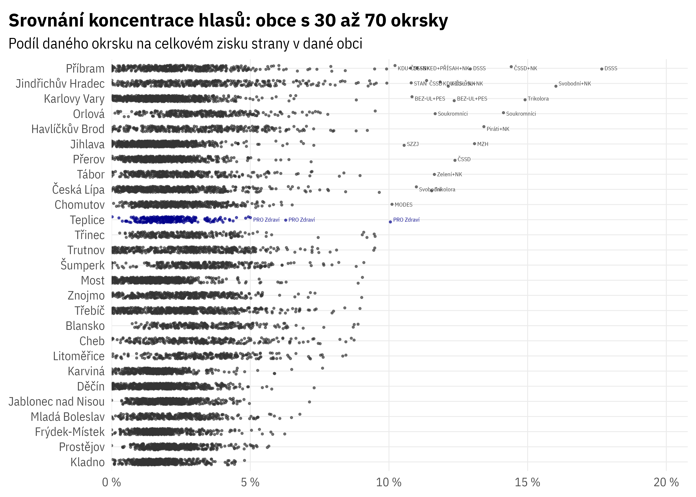

Teplice

# A tibble: 2 × 2
n nn
<dbl> <int>
1 0 5
2 1 12040Velké obce srovnání
# A tibble: 51 × 2
OBEC n
<chr> <int>
1 500089 1350
2 500097 1716
3 500119 4092
4 500143 2754
5 500178 3328
6 500186 1080
7 500208 3672
8 500216 1176
9 500224 3379
10 500496 1056
# … with 41 more rows| ID okrsku | číslo okrsku | Kod obce | Název obce | Strana (zkr.) | percentil | pořadí | Podíl okrsku na straně |
|---|---|---|---|---|---|---|---|
| 480 | 6 | 539911 | Příbram | DSSS | 1 | 1 | 17,7 % |
| 9761 | 15 | 545881 | Jindřichův Hradec | Svobodní+NK | 1 | 2 | 16,0 % |
| 5050 | 11 | 554961 | Karlovy Vary | Trikolora | 1 | 3 | 14,9 % |
| 488 | 14 | 539911 | Příbram | ČSSD+NK | 1 | 4 | 14,4 % |
| 14921 | 5 | 599069 | Orlová | Soukromníci | 1 | 5 | 14,1 % |
| 10379 | 13 | 568414 | Havlíčkův Brod | Piráti+NK | 1 | 6 | 13,4 % |
| 15580 | 43 | 586846 | Jihlava | MZH | 1 | 7 | 13,1 % |
| 475 | 1 | 539911 | Příbram | DSSS | 1 | 8 | 12,9 % |
| 416 | 2 | 511382 | Přerov | ČSSD | 1 | 9 | 12,4 % |
| 5057 | 18 | 554961 | Karlovy Vary | BEZ-UL+PES | 1 | 10 | 12,4 % |
| 9761 | 15 | 545881 | Jindřichův Hradec | KDU-ČSL+NK | 1 | 11 | 12,1 % |
| 9750 | 4 | 545881 | Jindřichův Hradec | KDU-ČSL+NK | 1 | 12 | 11,8 % |
| 14920 | 4 | 599069 | Orlová | Soukromníci | 1 | 13 | 11,7 % |
| 8260 | 30 | 552046 | Tábor | Zelení+NK | 1 | 14 | 11,6 % |
| 1220 | 5 | 561380 | Česká Lípa | Trikolora | 1 | 15 | 11,5 % |
| 9758 | 12 | 545881 | Jindřichův Hradec | ČSSD | 1 | 16 | 11,4 % |
| 478 | 4 | 539911 | Příbram | SNKED+PŘÍSAH+NK | 1 | 17 | 11,0 % |
| 1239 | 24 | 561380 | Česká Lípa | Svobodní | 1 | 18 | 11,0 % |
| 5052 | 13 | 554961 | Karlovy Vary | BEZ-UL+PES | 1 | 19 | 10,8 % |
| 9761 | 15 | 545881 | Jindřichův Hradec | STAN | 1 | 20 | 10,8 % |
| 490 | 16 | 539911 | Příbram | DSSS | 1 | 21 | 10,8 % |
| 15540 | 3 | 586846 | Jihlava | SZZJ | 1 | 22 | 10,5 % |
| 488 | 14 | 539911 | Příbram | KDU-ČSL+NK | 1 | 23 | 10,2 % |
| 1374 | 24 | 562971 | Chomutov | MODES | 1 | 24 | 10,1 % |
| 941 | 18 | 567442 | Teplice | PRO Zdraví | 1 | 25 | 10,1 % |
| 4668 | 9018 | 500216 | NA | SNK | 1 | 26 | 9,9 % |
| 9761 | 15 | 545881 | Jindřichův Hradec | Piráti+NK | 1 | 27 | 9,9 % |
| 489 | 15 | 539911 | Příbram | DSSS | 1 | 28 | 9,9 % |
| 1256 | 41 | 561380 | Česká Lípa | Piráti | 1 | 29 | 9,7 % |
| 9750 | 4 | 545881 | Jindřichův Hradec | SNK ED+NK | 1 | 30 | 9,5 % |
| 14921 | 5 | 599069 | Orlová | BZ | 1 | 31 | 9,5 % |
| 14614 | 22 | 598810 | Třinec | KDU-ČSL | 1 | 32 | 9,5 % |
| 14030 | 5 | 579025 | Trutnov | SproK+NK | 1 | 33 | 9,5 % |
| 482 | 8 | 539911 | Příbram | DSSS | 1 | 34 | 9,5 % |
| 14624 | 32 | 598810 | Třinec | ČSSD+NK | 2 | 35 | 9,5 % |
| 9760 | 14 | 545881 | Jindřichův Hradec | JIH 12+NK | 2 | 36 | 9,5 % |
| 14039 | 14 | 579025 | Trutnov | BPS+NK | 2 | 37 | 9,5 % |
| 9757 | 11 | 545881 | Jindřichův Hradec | KSČM+DOMOV | 2 | 38 | 9,3 % |
| 9762 | 16 | 545881 | Jindřichův Hradec | KDU-ČSL+NK | 2 | 39 | 9,3 % |
| 9763 | 17 | 545881 | Jindřichův Hradec | Patrioti ČR+NK | 2 | 40 | 9,2 % |
# A tibble: 282 × 6
OBEC ZKRATKAO8 podil_okrsku_na_strane percentil ID_OKRSKY rank
<chr> <chr> <dbl> <int> <chr> <dbl>
1 567442 PRO Zdraví 0.101 1 941 25
2 567442 PRO Zdraví 0.0628 8 943 244
3 567442 PRO Zdraví 0.0500 20 960 655
4 567442 KSČM 0.0493 21 970 701
5 567442 PRO Zdraví 0.0483 23 942 759
6 567442 PRO Zdraví 0.0450 30 965 1001
7 567442 PRO Zdraví 0.0438 34 937 1135
8 567442 KSČM 0.0426 38 959 1272
9 567442 PRO Zdraví 0.0425 38 948 1285
10 567442 KSČM 0.0409 44 969 1465
# … with 272 more rows# A tibble: 6 × 2
ZKRATKAO8 n
<chr> <dbl>
1 ANO 3580
2 KDU+Zel+Pir+NK 1641
3 KSČM 701
4 ODS+TOP 09 1565
5 PRO Zdraví 25
6 SPD 2055

Mapy


Histogramy


# A tibble: 6 × 3
# Groups: ZKRATKAO8 [6]
ZKRATKAO8 `FALSE` `TRUE`
<chr> <dbl> <dbl>
1 ANO 0.911 0.0886
2 KDU+Zel+Pir+NK 0.882 0.118
3 KSČM 0.867 0.133
4 ODS+TOP 09 0.885 0.115
5 PRO Zdraví 0.787 0.213
6 SPD 0.892 0.108 Scatter ploty


Klíčové okrsky


ID_OKRSKY cislo ZKRATKAO8 POC_HLASU podil_strany
1 943 20 ODS+TOP 09 753 0.15525773
2 943 20 SPD 1090 0.22474227
3 943 20 PRO Zdraví 1139 0.23484536
4 943 20 ANO 922 0.19010309
5 943 20 KSČM 136 0.02804124
6 943 20 KDU+Zel+Pir+NK 810 0.16701031
7 960 37 ODS+TOP 09 1487 0.24841296
8 960 37 SPD 956 0.15970598
9 960 37 PRO Zdraví 908 0.15168727
10 960 37 ANO 1701 0.28416305
11 960 37 KSČM 203 0.03391246
12 960 37 KDU+Zel+Pir+NK 731 0.12211828
13 941 18 ODS+TOP 09 1165 0.18613197
14 941 18 SPD 1038 0.16584119
15 941 18 PRO Zdraví 1824 0.29142035
16 941 18 ANO 1425 0.22767215
17 941 18 KSČM 194 0.03099537
18 941 18 KDU+Zel+Pir+NK 613 0.09793897Simulace
[,1]
POC_HLASU "18148"
recount_mean "-2313.77"
recount_median "-2504.533"
recount_3q "-2272.136"
recount_9d "-1738.624"
typ "Všechny okrsky: hladina v rámci všech okrsků" [,1]
POC_HLASU "18148"
recount_mean "-2414.833"
recount_median "-2508.617"
recount_3q "-2287.159"
recount_9d "-1887.783"
typ "Okrsky 18 a 20 vyloučeny: hladina v rámci zbylých okrsků"Spatial autocorrelation
Teplice
# A tibble: 6 × 5
# Groups: ZKRATKAO8 [6]
ZKRATKAO8 data weights len_wts ac
<chr> <list> <list> <int> <dbl>
1 ODS+TOP 09 <SpatVctr[,20]> <dbl [47 × 47]> 2209 0.285
2 SPD <SpatVctr[,20]> <dbl [47 × 47]> 2209 0.175
3 PRO Zdraví <SpatVctr[,20]> <dbl [47 × 47]> 2209 0.0895
4 ANO <SpatVctr[,20]> <dbl [47 × 47]> 2209 0.284
5 KSČM <SpatVctr[,20]> <dbl [47 × 47]> 2209 0.139
6 KDU+Zel+Pir+NK <SpatVctr[,20]> <dbl [47 × 47]> 2209 0.235 
Všechna města
# A tibble: 276 × 4
# Groups: obec_kod, ZKRATKAO8 [276]
obec_nazev obec_kod ZKRATKAO8 ac
<chr> <chr> <chr> <dbl>
1 Blansko 581283 Piráti -0.220
2 Jindřichův Hradec 545881 Patrioti ČR+NK -0.187
3 Třebíč 590266 SPD+Trikolora -0.165
4 Třebíč 590266 Piráti+NK -0.147
5 Kladno 532053 PŘÍSAHA -0.139
6 Jablonec nad Nisou 563510 NBPLK+NK -0.126
7 Jindřichův Hradec 545881 SNK ED+NK -0.120
8 Šumperk 523704 Zelení+ČSSD+NK -0.120
9 Jindřichův Hradec 545881 JIH 12+NK -0.118
10 Karlovy Vary 554961 BEZ-UL+PES -0.114
# … with 266 more rowsRozdělení podobně (ne)úspěšných stran v podobně velkých městech